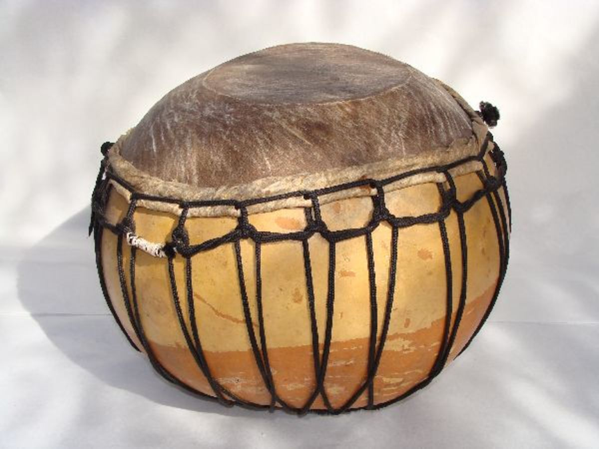

History
Drums are the world's oldest and most ubiquitous musical instruments, and the basic design has remained virtually unchanged for thousands of years.
Historic Drums
Drums made with alligator skins have been found in Neolithic cultures located in China, dating to a period of 5500–2350 BC. In literary records, drums manifested shamanistic characteristics and were often used in ritual ceremonies.
So drums have been around for many years, and it is safe to say that they will continue throughout the rest of human history.